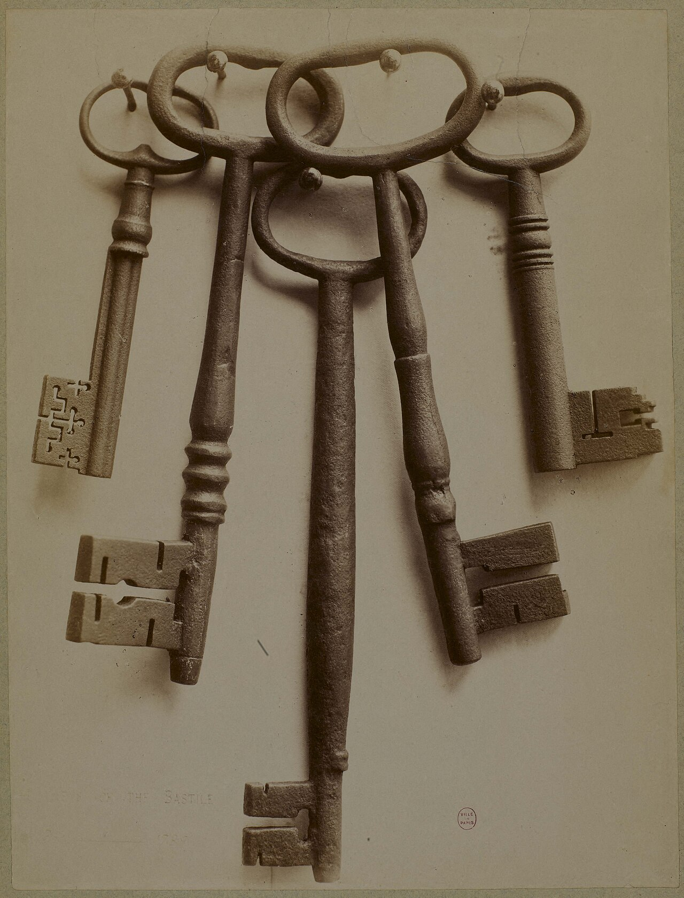
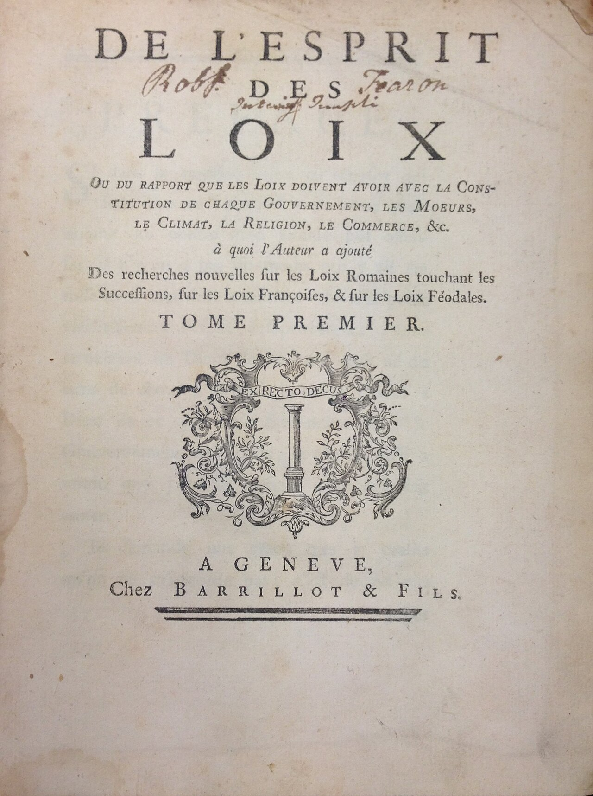
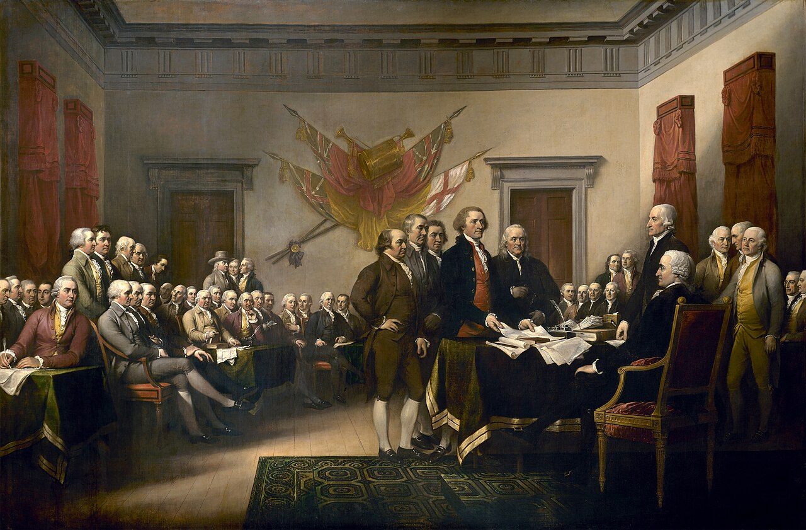
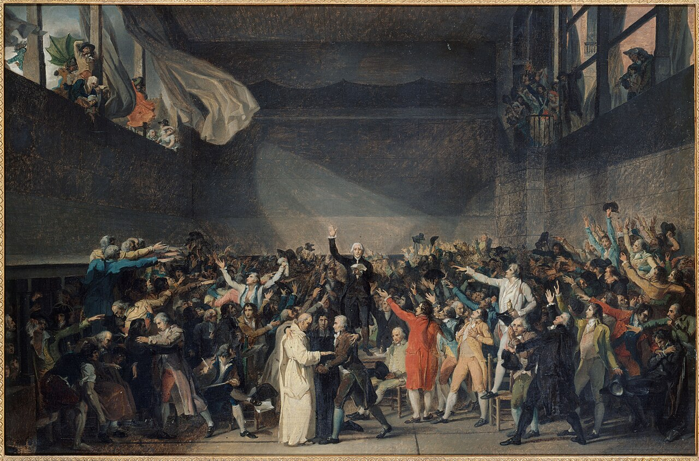
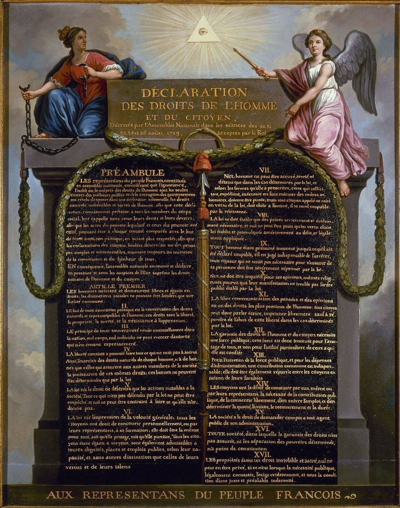
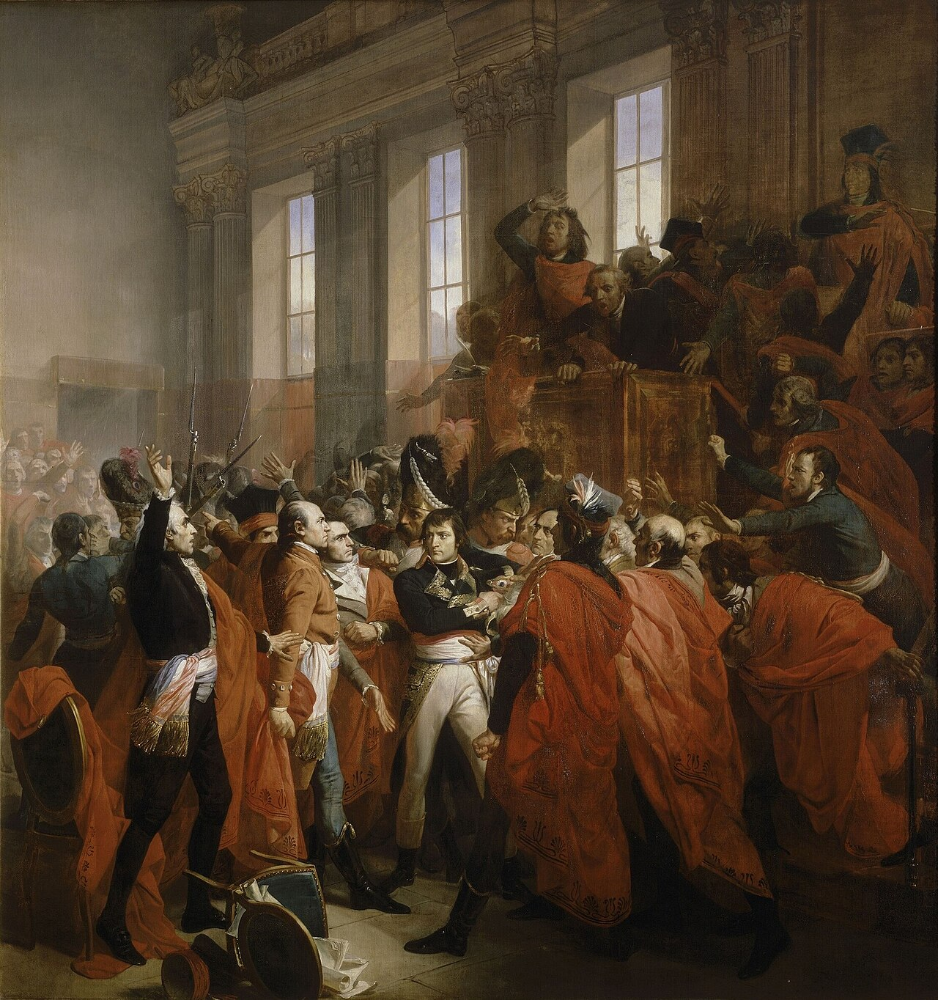

歴史・地理 History & Geography王さまの いない国は、 どうやって 生まれた？ 1776年、アメリカは王のいない国として独立を宣言し、1789年にはフランスで革命が始まりました。同じ啓蒙思想を設計図にしたのに、一方は憲法のもとで落ち着き、一方は王の処刑と恐怖政治をへて、将軍ナポレオンの手に渡ります。2つの革命を並べた年表と三権分立の図で、その分かれ道をたどってみませんか。
2026.11.16 UP 約8分で読める 文：SOMOSOMO編集部
写真：フィラデルフィアの独立記念館（1776年に独立宣言が採択された建物）／米国立公園局（2009年、パブリックドメイン）
Previously
前回は、地球が動くと唱えたガリレオが1633年に裁かれたあとも、学者たちが観測と計算を続け、1687年にニュートンの『プリンキピア』が、地上と天の動きを1つの法則で説明した話でした。その2年後、哲学者ロックは、人は生まれつき生命・自由・財産の権利を持つと説きます。
アメリカ、ヴァージニア州のマウントバーノン。初代大統領ジョージ・ワシントンが暮らした屋敷には、いまも古い鉄のかぎが1本、飾られています。1790年に、フランスの貴族ラファイエットが贈った、パリのバスティーユ牢獄のかぎです。
ラファイエットは若いころ海を渡り、アメリカの独立戦争をワシントンのもとで戦いました。帰国したフランスで革命が起きると、人権宣言のおもな案を書いています。かぎは、2つの革命の両方にかかわった人からの贈り物でした。
当時のヨーロッパの大きな国は、どこも王や皇帝が治めていました。ところが1776年のアメリカと、1792年のフランスで、相次いで王のいない国が生まれます。そして、その後の道は大きく分かれました。王さまのいない国は、どうやって生まれたのでしょうか 。

バスティーユのかぎ パリ市の所蔵する古い写真で、バスティーユのかぎとして伝わる5本です。どれも長い軸の先に四角い歯がついた、鉄のかぎです。ワシントンに贈られた1本は、これとは別に、いまもマウントバーノンにあります。写真：Clefs de la Bastille, PH10188 ／撮影者不明（1850〜1920年ごろ、CC0）
In a word
人びとの同意 を土台に、王の代わりに憲法と選挙 を置いた。
01
The Blueprint
王の代わりは、 先に 本の中で 描かれていた
前回の最後に出てきたイングランドの哲学者ロックは、1689年の本『統治二論』で、政府は治められる人びとの同意があってはじめて正しい、と説きました。同意のない政府なら、取りかえてもよい、とまで書いています。
フランスの思想家モンテスキューは、1748年の『法の精神』で、国の力を3つに分けるよう説きました。法律を作る力（立法）、法律を実行する力（行政）、法律にもとづいて裁く力（司法）です。別々の機関が受け持ち、互いにおさえ合えば、人びとの自由が守られる、という考えです（三権分立）。

『法の精神』の初版の扉 1748年に、スイスのジュネーヴの出版社から出た初版の第1巻です。いちばん上の DE L'ESPRIT DES LOIX が題で、下のほうに出版地の A GENEVE が見えます。写真：Montesquieu, De l'Esprit des loix (1st ed, 1748, vol 1, title page) ／Smuconlaw（2015年、パブリックドメイン）
ジュネーヴ生まれのルソーは、1762年の『社会契約論』で、さらに先へ進みます。法律を作る権利は、人びと全体の意思（一般意思）だけにある。国の主人は王ではなく人びとだ、という考えです（人民主権）。
どれも、理性で社会を考え直そうとする啓蒙思想の本でした。この設計図を最初に大きく使ったのは、大西洋の向こうの植民地の人びとでした。
02
Consent of the Governed
アメリカは、 王を 憲法と選挙に 置きかえた
北アメリカの東岸には、イギリスの13の植民地がありました。1763年、七年戦争でフランスに勝ったイギリスは、戦争でふくらんだ借金のため、植民地にも新しい税をかけ始めます。
植民地には、それぞれ選挙で選ぶ議会があり、身近なことは自分たちで決めてきました。ところがロンドンのイギリス議会には、植民地の代表がいません。代表を送っていない議会が決めた税は認めない──「代表なくして課税なし」が合いことばになりました。
1775年4月、戦いが始まります。1776年7月4日、フィラデルフィアに集まった13植民地の代表たち（大陸会議）は、独立宣言を採択しました。起草の中心は、のちに大統領になるジェファソンです。
宣言は、すべての人は平等につくられ、生命・自由・幸福を求める権利を持つ、とうたいました。政府はその権利を守るためにあり、正しい力は治められる人びとの同意から生まれる。ロックの考えが、独立を正しいとする理由に使われました。

独立宣言の草案を出す委員たち 1817〜1819年に、画家トランブルが描いた絵です。中央に立つ5人が、宣言を起草した委員で、草案を差し出しています。ただし、描かれた人たちが実際に一度にそろった場面ではありません。写真：Declaration of Independence (1819) ／ジョン・トランブル（1819年、パブリックドメイン）
1778年には、フランスがアメリカと同盟を結びます。1781年、ヴァージニアのヨークタウンで、アメリカとフランスの軍がイギリス軍を囲んで大きく勝ちました。1783年のパリ条約で、イギリスは独立を認めます。
ただ、独立してすぐ国がうまく回ったわけではありません。13の州をゆるく結んだ最初のしくみ（連合規約）では、州どうしがまとまりませんでした。そこで1787年の夏、フィラデルフィアで新しい憲法が書かれます。
合衆国憲法は、ロックの「同意」とモンテスキューの「分立」を組み合わせ、国の力を議会・大統領・裁判所に分けました。大統領は任期4年で、選挙で選びます。1789年4月30日、ワシントンが初代大統領になりました。
Fig.01 合衆国憲法が 王の代わりに 置いた 3つの力
立法
行政
司法
議会
大統領
最高裁判所
（上院と下院）
（任期4年）
（裁判所の頂点）
法律を作る
法律を実行する
法律で裁く
おさえ合いの例
大統領は、議会の法案を拒否できる
議会は、3分の2の賛成で拒否を覆せる
大統領は裁判官を指名し、上院が承認する
議会は、大統領を弾劾してやめさせられる
上院議員は州議会が選んだ（1913年まで）。大統領は
いまも各州の選挙人を通して選ばれる。
見どころは、3つの力が並ぶだけでなく、互いにブレーキをかけ合うしくみまで書かれていること。モンテスキューの考えを、1787年の憲法が具体的な決まりにしました。図は簡単にしたものです。
ワシントンは1792年にも全員一致で選ばれましたが、2期で自分から退きました。1797年、大統領の座は選挙をへて次の人に引きつがれます。一生その座にいる王ではなく、決まりにしたがって交代する。これが、王のいない国の形になりました。
もっとも、すべての人は平等ということばに、奴隷にされていた人びとは入っていませんでした。奴隷を持つ代表たちがこう宣言してよいのか、という批判は、当時からありました。
03
Starting with a King
フランスは、 王のいる国のまま 変えようとした
ワシントンが大統領になった5日後の1789年5月5日、パリ近くのヴェルサイユで、三部会が開かれます。聖職者・貴族・平民という3つの身分の代表が集まる会議で、長いあいだ開かれていませんでした。
王が会議を開いたのは、お金に困ったからです。戦争のたびに借金がふくらみ、1788年には国の収入の半分が、借金の返済に消えていました。アメリカの独立戦争を助けた費用も重くのしかかります。新しい税は三部会でなければ認められない、と貴族たちが言い張りました。
会議は、票を身分ごとに数えるか、1人ずつ数えるかでもめます。1789年1月に出た小冊子『第三身分とは何か』は、平民（第三身分）こそが国のすべてだ、と説いていました。6月17日、平民の代表たちは、自分たちこそ「国民議会」だと名乗ります。
3日後、議場をしめ出された代表たちは、近くの屋内球技場に集まり、憲法ができるまで解散しないと誓いました（テニスコートの誓い）。

テニスコートの誓い ダヴィッドの作とされる、1789年6月20日の誓いの場面です。中央で台の上に立つ人物に向かって、議員たちがいっせいに手を挙げています。写真：Serment du Jeu de paume, le 20 juin 1789 ／伝ジャック＝ルイ・ダヴィッド（18世紀、CC0）
7月14日、王が軍を集めていることにおびえたパリの人びとが、銃に使う火薬を求めてバスティーユ牢獄を襲いました。この日が、フランス革命の始まりとされています。8月には、貴族や聖職者の特権が廃止されます。そして8月26日、議会は、ラファイエットらが案を練った人権宣言を採りました。
人は生まれながらに自由で、権利において平等である。主権（国の行く先を決める最終の力）は国民にある。権利が守られず、権力が分けられていない社会に、憲法はない──。ルソーとモンテスキューの考えが、ここに並びました。

人権宣言 1789年ごろに描かれた絵で、2枚の石板のような形の板に、宣言の前文と条文が書かれています。左は断ち切った鎖を持つ王政、右は笏を持つ翼のある国民の守り神をあらわすとされます。写真：Declaration of the Rights of Man and of the Citizen in 1789 ／ジャン＝ジャック＝フランソワ・ル・バルビエ（1789年ごろ、パブリックドメイン）
ただ、フランスはまだ王を残していました。1791年9月の憲法は、王はいても法律は議会が作る「立憲王政」です。ところがその3か月前、王の一家は変装して国外へ逃げようとし、ヴァレンヌで見つかって連れ戻されていました。王への信頼は大きく崩れます。
1792年4月、フランスはオーストリアなどとの戦争に入り、負けが続きます。8月10日、パリの国民衛兵（市民がつくった軍）と地方から来た兵が王宮を襲い、王は捕らえられました。9月21日、新しい議会（国民公会）は王政の廃止を決め、フランスは共和政（王のいない国）になります。
国民公会は王を裁判にかけ、投票で死刑を決めます。1793年1月21日、ルイ16世は、パリの革命広場で、ギロチン（首を切る処刑台）にかけられました。いまのコンコルド広場です。
いまのコンコルド広場 ルイ16世が処刑された広場は、いまはパリの中心の大きな広場です。手前に立つのはエジプトのルクソールから運ばれたオベリスク（記念の石柱）で、右奥にエッフェル塔が見えます。写真：Concorde obelisque tour Eiffel ／Jebulon（2011年、CC0）
04
Two Roads
同じ設計図から、 なぜ 道が分かれた？
王のいない共和国は、すぐに追いつめられます。外国の軍に加えて、1793年3月には西部のヴァンデで反乱が起き、内戦になりました。権力は、ロベスピエールらが率いる公安委員会（国を守るための委員会）に集まります。
6月にできた共和国の憲法は、平和が来るまで止められました。1793年9月から翌年7月までに約30万人が捕らえられ、約1万6,600人が反革命の罪で処刑されます（恐怖政治）。裁判なしで殺されたり獄中で死んだりした人も、数万人いたとみられます。1794年7月には、ロベスピエール自身も処刑されました。
1795年に始まった総裁政府（5人の総裁が率いる政府）も、選挙の結果を取り消すなどして安定しません。
1799年11月9日、将軍ナポレオン・ボナパルトが、政府の一部と組んでクーデタ（武力などで政権を奪うこと）を起こして権力をにぎり、12月の新しい憲法で第一統領（3人の統領のうち、最も強い力を持つ役）になりました。

議会に乗りこむナポレオン クーデタの2日目、パリ郊外のサン＝クルーの議場で、赤い衣の議員たちに囲まれる、中央の黒い上着の人物がナポレオンです。40年ほどのちの1840年に描かれました。写真：Le général Bonaparte au Conseil des Cinq-Cents ／フランソワ・ブショ（1840年、パブリックドメイン）
同じ啓蒙思想から出発して、なぜこれほど道が分かれたのでしょうか。歴史家の見方はさまざまですが、よく挙げられるのは次の3つです。
作り変えたものの大きさ アメリカが取り除いたのは、海の向こうの王と議会の支配でした。植民地の議会や暮らしのしくみは残ります。フランスは、身分の特権、領主の権利、教会の土地まで、社会のしくみを数か月で作り変えました。
自分たちで決めてきた経験 植民地の人びとは、選挙で選んだ議会で、長く自分たちのことを決めてきました。フランスでは、全国の代表が集まる三部会さえ、長く開かれていませんでした。
戦争のさなかの国づくり アメリカは1783年に戦争を終え、落ち着いて憲法を作れました。フランスは1792年から周りの国々と戦い続け、国内の反乱もかかえたまま、新しい国を作らなければなりませんでした。
同じ時代の人の目にも、2つの革命はちがって見えていました。イギリスの政治家バークは、アメリカの植民地の言い分には理解を示しながら、1790年の本でフランス革命を厳しく批判します。古くからの財産や宗教の権利を、革命家たちが一気に取り上げた、という理由からでした。
一方で、フランスの目標のほうが大きかった、という見方もあります。人権宣言は、身分の特権をなくすことと合わせて、アメリカの独立宣言よりも強く「平等」を打ち出した、とフランスの歴史家ルフェーヴルは述べています。
Fig.02 2つの革命を 並べてみる （1775〜1800年）
1775
1780
1785
1790
1795
1800
アメリカ
フランス
1775 独立戦争へ
1776 独立宣言
1783 パリ条約
1787 憲法を作る
1789 初代大統領
1797 大統領が交代
1789 三部会
1789 バスティーユ
1789 人権宣言
1792 外国と戦争
1792 王政を廃止
1793 王の処刑
1793 恐怖政治
1795 総裁政府
1799 ナポレオン
王がいた時代
王のいない政府
恐怖政治
見どころは、行き先の違い。アメリカは13年かけて憲法の政府にたどり着き、フランスは王政をやめて7年で将軍ナポレオンの手に渡りました。黒い帯の白い線は、政府のしくみが変わった年です。帯の長さは年数に比例します。
王さまのいない国は、人びとの同意で治めるという設計図を、憲法と選挙という形にすることで生まれました。ただ、紙の上の設計図が根づくには、自分たちで決めてきた経験と、落ち着いて話し合える時間が要りました。アメリカにはそれがあり、革命のフランスにはそれが足りなかった ──そう見ることができます。
05
By the Numbers
数字で見る 2つの革命
157年 植民地ヴァージニアで、選挙で選ぶ議会が開かれていた年月（1619〜1776年）。独立の前から、議会で決める経験があったHouse of Burgesses（Wikipedia）による
175年 フランスで、三部会が一度も開かれなかった年月（1614〜1789年）。全国の代表が集まる場が、それだけ長くなかったFrench Revolution（Wikipedia）による
4つ 1791〜1799年にフランスで作られた憲法の数（1793年のものは実施されず）。アメリカの1787年の憲法は、いまも使われているFrench Revolution ほか（Wikipedia）による
Here's the Fun Part
ここが面白い！革命を始めた 小冊子の作者が、 革命を 終わらせた
1789年1月の小冊子『第三身分とは何か』を書いたのは、聖職者のシエイエスです。6月17日、平民の代表たちに「国民議会」と名乗るよう提案したのも彼でした。そのあと人権宣言づくりにも加わり、1793年には王の死刑に賛成の票を投じています。
恐怖政治のあいだは目立たないように過ごし、あとで何をしていたかと聞かれて、ただ生きのびた、と答えた話が残っています。
そして1799年、総裁の1人になったシエイエスは、政府をくつがえす計画を立て、力を貸してくれる将軍を探します。手を組んだ相手がナポレオンでした。国民こそが国の主人だとかかげて革命の口火を切った人が、10年後、その革命を将軍に引きわたす側にいたのです 。
日本国憲法にも、国民主権と三権分立が書かれています。社会の教科書で、国会・内閣・裁判所を結ぶ三角形の図を見かけたら、240年ほど前の2つの革命と、その両方を見ていたかぎのことを思い出してみてください。
To be continued
1799年に権力をにぎったナポレオンは、1804年に皇帝となり、ヨーロッパの大部分に軍を進めます。革命をへたフランスでは、兵士が戦う理由も、王のためから、自分たちの国のためへと変わりつつありました。国のために戦う「国民」は、いつ、どうやって生まれたのでしょうか。